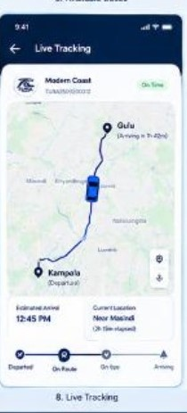

MODERN COAST · UGX 40,000
Kampala → Gulu
Tuesday, September 29 · 08:00 AM · 1 Passenger
Select your seat
Choose an available seat on the coach.
Tap an available seat to select it.
This preview does not lock seats. The connected app confirms availability on the server.
